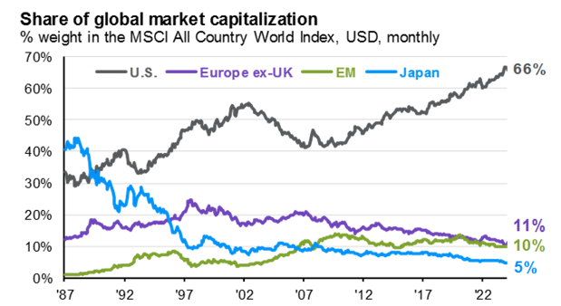
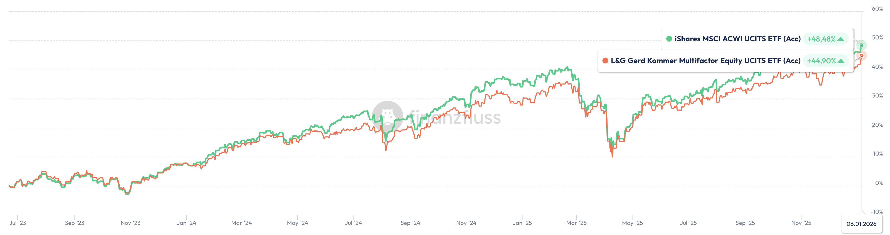

Einleitung: Warum das ganze?
Ich mag den Gedanken, dass man aus Geld, ohne dass man "aktiv" was dafür tut, mehr machen kann. Ich finde es faszinierend. Weil ich mich über die Jahre so viel mit Podcasts wie Finanzfluss, YouTube Kanälen, Büchern wie "Finanzguru" und Dr. Google, sowie diversen LLMs beschäftigt und ausgetauscht habe, wollte ich das mal alles niederschreiben, was ich mir über die Zeit angeeignet habe. Wenn du das hier liest, dann habe ich dich wohl gern und lasse dich an meinen Gedanken teil haben. Für mich ist es ein cooler Wissensspeicher, welcher nicht verloren geht, und beliebig erweiterbar ist. Gleichzeitig lerne ich was über Website Hosting usw.;
Das "Keine Marktmeinung" Portfolio (1 ETF)
Hier tut man so, als hätte man keine Meinung zum Markt und bildet diesen maximal passiv ab. Die einfachste Form des Investierens ist oft die effektivste. Die Kern-Logik folgt der Marktkapitalisierung: Das Portfolio passt sich automatisch dem Wandel der Weltwirtschaft an. Das ist grundsätzlich auch die einfachste Art zu investieren, weil Sie völlig autark läuft. Aber wo ist jetzt der Haken? Manche Stimmen bemängeln, dass mittlerweile die Gewichte gewisser Regionen und einzelner Unternehmen viel zu hoch sind, und man diese Strategie nicht mehr als breite Diversifikation bezeichnen kann.
Hier sieht man, wie stark die Regionen sich im ACWI über die Zeit verschieben. Durch die Tech-Riesen, die KI Bubble und die Magnificient 7 ist das US Gewicht bis heute so gestiegen.
Abbildung: Gewichte der Weltregionen über die Zeit im ACWI
Gerd Kommer gehört zu denen, die hier mangelnde Diversifikation bemängeln. Diese Strategie bildet stumpf "den Markt" ab. Wenn jemand in der Finanzwelt davon spricht den Markt zu schlagen, dann meint man immer die Gesamtheit des investierbaren Kapitalmarkts des Assets Aktien. Die Gewichtung der Marktkapitalisierung ist sehr einfach zu verstehen, desto größer die Summe des gesamten Werts der Wertpapiere eines Unternehmens, desto größer das Gewicht im Portfolio. Genau das machen die ETFs, die ich fortfolgend vorschlage für einen. Lasst uns vorher noch ein paar Basics festhalten.1. Thesaurierend vs. Ausschüttend
Es gibt ausschüttende ETFs, hier werden Dividenen der Unternehmen an dich ausbezahlt. Das Geld siehst du als Geldeingang in deinem Brokerguthaben, oder am Girokonto. Und es gibt thesaurierende ETFs, welche die Gewinne für dich reinvestieren. Ich empfehle klar die thesaurierenden Varianten aus zwei Gründen:
- Minimaler Aufwand: Dividenden werden automatisch reinvestiert, kein manuelles Zutun nötig. Heißt du musst die Dividene nicht manuell neu investieren und Anteile nachkaufen.
- Steuerstundung: Trotz der Angleichung durch die Vorabpauschale bleibt ein gewisser Steuerstundungseffekt erhalten, da Steuern auf Gewinne erst beim Verkauf in der fernen Zukunft fällig werden.
2. Die Small Cap Debatte
Kleine Unternehmen versprechen aufgrund höherer Volatilität und ihrerer noch kleinen Größe große Wachstumspotentiale. Sie werden entweder das nächste Apple oder NVIDIDA, oder es droht Totalausfall. Diese Risikoprämie oder auch "Small Cap Prämie" existiert historisch, ist aber kein Garant für Outperformance in der Zukunft. Große Unternehmen wie Apple oder Amazon können zwar nicht mehr so groß wachsen wie ein Start-Up, aber hier werden. Kursgewinne einfach anders erzielt. Diese Unternehmen haben solch hohe Cashflows, dass Sie einfach massiv Aktienanteile nachkaufen und so die Kurse steigern. Ein Vergleich über die letzten 15 Jahre zeigt kaum signifikante Unterschiede von mit, oder ohne Small Cap Investition. Die Entscheidung für 99% Abdeckung (IMI, =Investable Market Index) ist oft eher eine psychologische Frage der Vollständigkeit als ein Rendite-Turbo.
3. Auswahlkriterien jenseits der TER
Erstmal, was ist die TER? Das ist die Total Expenses Ratio. Auf deutsch? Die Kosten, die du dem ETF-Anbieter zahlst, dass er für dich den Index abbildet. Die reine Kostenquote (TER) ist ein guter Indikator, aber trügerisch. Achte zusätzlich auf:
- Größe der Anteilsklasse (AUM): Größere Fonds sind liquider und profitabler für den Anbieter. Was das heißt? Wenn ein ETF liquide ist, dann ist der sogenannte Spread, sprich die Differenz zwischen dem Kurs den du bezahlst, und dem Kurs, der aktuell an der Börse im Broker angezeigt wird ist sehr gering oder gleich. Wenn der ETF nicht liquide ist, dann ist der Spread hoch. Das ist schlecht für dich. Ich schaue immer auf ETFs mit Fondvolumen größer 1 Mio. EUR.
- Anbieter-Stabilität: Anbieter wie iShares, oder Vanguard sind vorzuziehen. Warum? Anbieter mit sehr günstigen TER haben (Amundi z.B.) haben in der Vergangenheit gezeigt, dass Sie z.B. ihre Steuerheimat des ETF umziehen, oder diesen mit einem anderen ETF zusammenlegen. Gefahr? Der ETF wird zwangsweise liquidiert egal zu welchem Kurs er gerade steht.
Damit du mal siehst, was es konkret heißt, sprich wie stark die ETFs wirklich unterschiedlich performen sieht man in folgender Abbildung. Siehst du da einen großen Unterschied? Nein? Ich auch nicht.

Abbildung: 4 Index Kandidaten im Performance Vergleich
Wenn du mal selbst ETFs vergleichen willst, kannst du das unter Finanzfluss ETF-Vergleich machen.
| Index-Kandidaten | ISIN | TER | Abdeckung | Fondvolumen | Kommentar |
|---|---|---|---|---|---|
| Vanguard FTSE All-World | IE00BK5BQT80 | 0,22% | ~90% | ~25 Mrd. € | Der Goldstandard |
| iShares MSCI ACWI | IE00B6R52259 | 0,20% | ~85% | ~12 Mrd. € | Marktführer-Alternative |
| SPDR MSCI ACWI IMI | IE00B3YLTY66 | 0,17% | ~99% | ~8 Mrd. € | Inkl. Small Caps |
| Amundi Prime All Country | IE0009HF1MK9 | 0,07% | ~85% | ~1,2 Mrd. € | Preisbrecher |
Das klassische 70/30-Portfolio (2 ETFs)
Das 70/30-Modell ist der wohl bekannteste Ansatz für Anleger, die eine bewusste Gewichtung der Weltregionen anstreben und nicht stur der Marktkapitalisierung folgen wollen.
Die Core-Logik: Warum 30% Schwellenländer?
- BIP-Gewichtung: In einem Standard-ACWI machen Schwellenländer nur ca. 10% aus. 70/30 rückt das Portfolio näher an die reale Wirtschaftsleistung (BIP).
- Markowitz-Optimierung: Historische Rückrechnungen zeigen oft, dass bei ca. 30% EM die ideale Sharpe Ratio (Rendite-Risiko-Verhältnis) lag.
Hier das beste Video, dass ich mir je bzgl. dem Vergleich verschiedener EM Gewichte angesehen habe. Der Typ ist auch Data Scientist, und macht nicht das typische nachplappern von anderen, sondern geht wissenschaftlich vor: Video auf Notgroschen YouTube Channel

Abbildung: EM Gewichte im Vergleich
Das Exposure-Problem: Viele Unternehmen im MSCI World erzielen gewaltige Umsätze in Schwellenländern. Wer stur nach BIP gewichtet, übersieht dieses indirekte Exposure und gewichtet EM faktisch oft doppelt. Deshalb darf man nicht auf "GDP: Länder" gucken, sondern auf "Länder mit Exposure"
| Komponente | ISIN | TER | Zweck | AUM (ca.) |
|---|---|---|---|---|
| 70% MSCI World (Core) | IE00B4L5Y983 | 0,20% | Industrieländer | ~75 Mrd. € |
| 30% EM IMI (Core) | IE00BKM4GZ66 | 0,18% | Schwellenl. inkl. Small | ~20 Mrd. € |
Das vollständige 70/30 Portfolio (3 ETFs)
Hier werden die Small Caps der entwickelten Welt explizit ergänzt, um die Industrieländer-Abdeckung von 85% auf nahezu 100% zu heben. Der Emerging Markets ETF ist aufgrund IMI bereits inkl. Small Caps. Warum also keinen MSCI World IMI? Gibt es schlichtweg nicht investierbar in unserem Wirtschaftsraum.
Warum diese Komplexität?
Der Standard MSCI World lässt ca. 15% der Marktkapitalisierung (ca. 4.000 Unternehmen) weg. Durch die Beimischung des Small Cap ETFs schließt du diese Lücke. Für den Index Anbieter MSCI gilt ganz allgemein, dass die größten 85% des Kapitalmarktes Large- und Mid Cap Unternehmen sind, und die nächsten 14% zählen dann für den Anbieter als Small Caps. Wer aufgepasst hat merkt:
| Gewichtung | Komponente | ISIN | TER | Abdeckung |
|---|---|---|---|---|
| 59,5% | MSCI World (Large/Mid) | IE00B4L5Y983 | 0,20% | Industrie Basis |
| 10,5% | MSCI World Small Cap | IE00BF4RFH31 | 0,35% | Industrie Smalls |
| 30,0% | Emerging Markets IMI | IE00BKM4GZ66 | 0,18% | Schwellenl. Full |
Das US-Balanced Portfolio (3 ETFs)
Dieses Portfolio setzt auf eine bewusste Regional-Steuerung, um die aktuelle US-Dominanz (fast 70% im MSCI World) zu begrenzen. Warum würde man sich für das Portfolio entscheiden wollen? Manchen ist das US Gewicht einfach zu hoch. Sie sagen psychologisch: "Trump? Der spinnt doch, und die ganze geopolitische Lage da drüben, hmm, das ist mir zu risikobehaftet. Da ist ja viel von der US-Regulatorik abhängig.." Gegner sagen: "Aber nur weil 70% US Markt sind, heißt das ja nicht, dass das ein Problem ist, weil doch US Unternehmen ihre Umsätze nicht nur in US machen, im Gegenteil. Apple oder diverse andere der Magnificient 7 machen doch ihre Umsätze längst außerhalb der USA, also ist das kein Risiko..". Wer hat denn jetzt Recht? Keine Ahnung. Wenn du Warren Buffet fragen würdest, würde er dir erklären, dass der US Kapitalmarkt zu einem der rentabelsten gehört, weil die US-Regulatorik so gut für das Unternehmertum ist. Hat er unrecht? Wenn man den S&P 500 historisch anschaut, hat er wohl recht. 90% seines Erbe hat er sogar festgehalten, dass die in genau einen solchen Fond gehen sollen. Gerd Kommer würde so etwas sagen wie "Wer ernsthaft diversifizieren will, der kann nicht einfach in einen MSCI World oder ACWI investieren, dass ist längst kein breit gestreutes Investieren mehr".
"Never bet against America" (Buffett) vs. "Diversifikation ist das einzige Free Lunch" (Kommer).
Der "Light"-Kommer Ansatz
Mit dem MSCI World ex USA lässt sich das US-Gewicht auf 40-50% herunterschrauben. Man imitiert die regionale Verteilung des Gerd Kommer ETFs, ohne dessen höhere Gebührenstruktur (0,45% TER) zu tragen. Der Gerd Kommer ETF macht natürlich weit mehr: Kommer ETF
| Baustein | ISIN | TER | Zweck | AUM (ca.) |
|---|---|---|---|---|
| S&P 500 (USA) | IE00B5BMR087 | 0,07% | USA Core | ~90 Mrd. € |
| MSCI World ex USA | IE000R4ZNTN3 | 0,15% | Industriel. ohne USA | ~1,8 Mrd. € |
| EM IMI | IE00BKM4GZ66 | 0,18% | Schwellenländer | ~20 Mrd. € |
Die maximale Freiheit, IMI (9 ETFs)
Der maßgeschneiderte Anzug: Jede Region wird einzeln abgebildet. Dies ermöglicht eine gewichtete TER von ca. 0,10%. Das Ding hab ich mal gebaut, weil ich genau wie Herr Kommer eine 50% Gewichtung nach BIP und eine 50% Gewichtung nach Marktkapitalisierung mochte. Damit man das je Region machen kann, muss man jede Region für sich abbilden. Annäherungsweise geht das mit diesem Portfolio: Wieso nicht MSCI USA und MSCI USA Small Cap? Es gibt keinen MSCI USA Small Cap, außer ESG Variaten (Nachhaltigkeitsfokus). Außerdem ist S&P der absolute Standard für den US Kapitalmarkt und hat folglich die größten Fondvolumen und damit gute TER und Liquidität. Japan gibt es schon als IMI, Emerging Markets auch. Canada Small Caps und Pacific Small Caps sind nicht investierbar. Das ist eine Einschränkung. Algemein ist Kanada nicht gut investierbar, es gibt zwar ETFs für diesen Markt, aber die TER sind nicht gut. 0,33% bis 0,46%. iShares bietet keine Core Variante an.
| Region | ISIN | TER | ETF Name | AUM (ca.) |
|---|---|---|---|---|
| USA Large | IE000XZSV718 | 0,03% | SPDR S&P 500 | ~10 Mrd. € |
| USA Mid | IE00B4YBJ215 | 0,30% | SPDR S&P 400 | ~2,5 Mrd. € |
| USA Small | IE00BJ38QD84 | 0,30% | SPDR Russell 2000 | ~1,5 Mrd. € |
| Europa L/M | LU0274209237 | 0,12% | Xtrackers MSCI Europe | ~5 Mrd. € |
| Europa Small | LU0322253906 | 0,30% | Xtrackers Europe Small | ~1,2 Mrd. € |
| Japan IMI | IE00B4L5YX21 | 0,12% | iShares Japan IMI | ~3 Mrd. € |
| Pacific ex Jap | IE00B52MJY50 | 0,20% | iShares Pacific ex Jap | ~1,5 Mrd. € |
| Emerging Markets | IE00BK5BR733 | 0,18% | iShares MSCI Emerging Markets IMI | ~29 Mrd. € |
| Kanada | IE00B52SF786 | 0,48% | iShares MSCI Canada | ~0,8 Mrd. € |
Die maximale Freiheit ohne Small Caps (5 ETFs)
Favorit für Vanguard-Fans. Keine Small-Caps, dafür maximale Übersichtlichkeit und genossenschaftliche Struktur. Es gibt viele Vanguard Fans. Gegenüber Strategie 5 hat man immer noch die vollständige regionale Freiheit, nur ohne Small Caps, dafür aber 4 ETFs weniger. Die Fondvolumen sind beträchtlich. Die TER sind super. Die ETFs gibt es auch schon ewig.
| Region | ISIN | TER | AUM (ca.) | Besonderheit |
|---|---|---|---|---|
| Nordamerika | IE00BK5BQW10 | 0,10% | ~3,5 Mrd. € | Inkl. Kanada |
| Europa | IE00BK5BQX27 | 0,10% | ~4,5 Mrd. € | .. |
| Emerging Markets | IE00BK5BR733 | 0,22% | ~3,8 Mrd. € | Inkl. China A |
| Japan | IE00BFMXYX26 | 0,15% | ~1,8 Mrd. € | .. |
| Pacific ex Jap | IE00B9F5YL18 | 0,15% | ~0,9 Mrd. € | .. |
Der „Gerd Kommer“ Ansatz (1 ETF)
Will ich nicht auslassen. Gerd Kommer wird von vielen als der ETF-Papst bezeichnet. Die Wissenschaftliche Quintessenz seiner Strategie: Multifactor-Investing (Small Cap, Momentum, Quality, ..), 50/50 Gewichtung (BIP/Market Cap) und 1%-Einzelwert-Cap nach oben begrenzt. Der einzige Nachteil seines Angebots ist wirklich nur die TER %, wenn die genauso wie beim ACWI wäre, würde ich mich wohl sogar für seinen ETF entscheiden, oder zumindest zu 50% einen ACWI und zu 50% seinen ETF besparen. Aber mit der aktuellen Kostenstruktur von 0,45% ist es mir noch zu hoch. Ich glaube einfach nicht daran, dass sein Ansatz im Schnitt um 0,25% mehr Rendite erwirtschaftet, als ein ACWI. Denn nur wenn er das schafft, wäre die höhere TER % ausgeglichen. Übrigens, wer sich fragt wie man die TER abgibt, die ist bereits im Kurs des ETF eingepreist. Also man bekommt das überhaupt nicht mit.
Ich will an der Stelle mal zeigen, wie stark sich bisher die Diversifizierung in kleinen Crash Situationen beweist. Ich persönlich finde jetzt nicht, dass der Unterschied der Crash-Tiefe so viel toller ist beim Kommer ETF. Bilder sagen mehr als tausend Worte:
Abbildung: Verhalten der ETFs auf Trumpf Zölle im April 2025
| ETF Name | ISIN | TER | AUM (ca.) | Alter |
|---|---|---|---|---|
| L&G Gerd Kommer ETF | IE0001UQQ933 | 0,45% | ~0,9 Mrd. € | ~2,5 J. |
Das 50/30/20-Portfolio (3 ETFs)
Der Vollständigkeit halber nehme ich das hier noch mit auf. Sehr viele starten irgend wann einmal mit einem 70/30 Portfolio, weil man das ja überall liest und propagiert bekam. Diese Strategie empfehle ich nicht als Start, sondern als Reperatur. Quasi eine evolutionsbedingte Lösung für Bestandshalter zur US-Verwässerung. Der Gründer von Finanzfluss macht es z.B. so. Was mich daran stört?
- Redundanz: Double Exposure bei Europa-Titeln (World + Stoxx 600).
- Japan außen vor: Japan bleibt massiv unterrepräsentiert.
| Anteil | Komponente | ISIN | TER | Anbieter |
|---|---|---|---|---|
| 50% | MSCI World | IE00B4L5Y983 | 0,20% | iShares |
| 30% | Emerging Markets IMI | IE00BKM4GZ66 | 0,18% | iShares |
| 20% | STOXX Europe 600 | LU0908500753 | 0,07% | BNP Paribas |